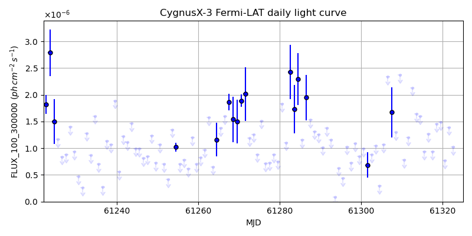
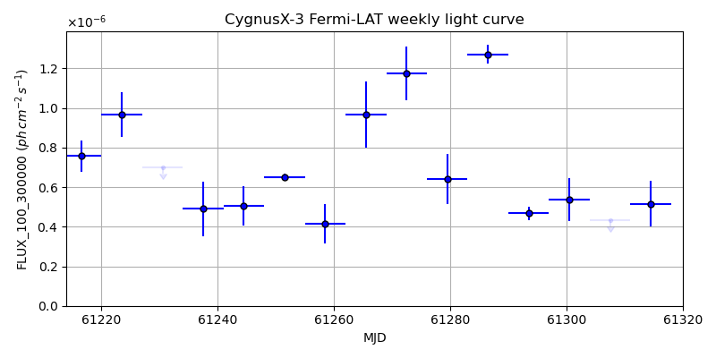
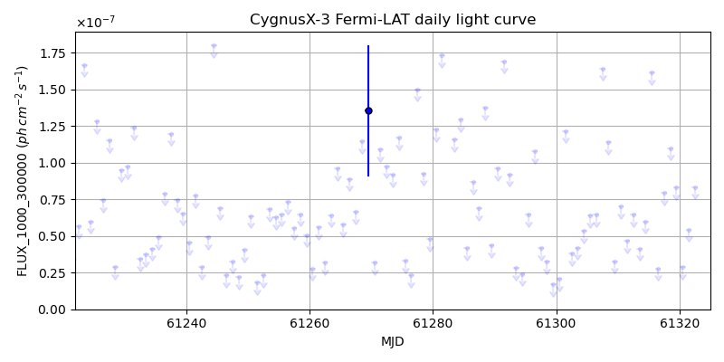
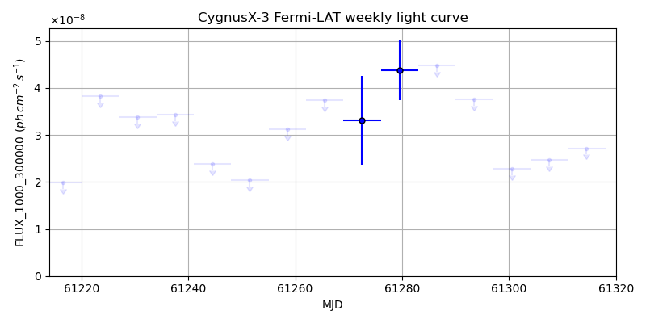

LAT Lightcurve site: https://fermi.gsfc.nasa.gov/ssc/data/access/lat/msl_lc/source/Cygnus_X-3
NED: Query
Time of last update of this page: UT: 2026-10-10 15:28 (MJD: 61323.644)
| Property | Value |
|---|---|
| R.A. | 20:32:25.68 |
| Dec. | 40:57:28.8 |
| z | 0.000 |
| 3FGL SpectrumType | |
| 3FGL PL Index | -1.00 |
| 3FGL Flux_100_300000 | -1.00e+00 |
| 3FGL Flux_1000_300000 | -1.00e+00 |
| 3FGL Flux >200 GeV | -1.00e+00 |
| 3FGL Extrap. Crab >200 GeV | -1.00 |
| 3FGL Flux After EBL Absorption >200GeV | -1.00e+00 |
| 3FGL EBL Crab Fraction >200GeV | -1.00 |

| MJD | dMJD | Flux | dFlux | Frac3FGL | FracCrab>200GeV | EBLFracCrab>200GeV |
|---|---|---|---|---|---|---|
| 61318.50 | 0.50 | 1.45e-06 | 0.00e+00 | 0.00 | 0.00 | -0.00 |
| 61319.50 | 0.50 | 1.49e-06 | 0.00e+00 | 0.00 | 0.00 | -0.00 |
| 61320.50 | 0.50 | 7.70e-07 | 0.00e+00 | 0.00 | 0.00 | -0.00 |
| 61321.50 | 0.50 | 1.39e-06 | 0.00e+00 | 0.00 | 0.00 | -0.00 |
| 61322.50 | 0.50 | 1.03e-06 | 0.00e+00 | 0.00 | 0.00 | -0.00 |

| MJD | dMJD | Flux | dFlux | Frac3FGL | FracCrab>200GeV | EBLFracCrab>200GeV |
|---|---|---|---|---|---|---|
| 61286.50 | 3.50 | 1.27e-06 | 0.00e+00 | 0.00 | 0.00 | -0.00 |
| 61293.50 | 3.50 | 4.68e-07 | 0.00e+00 | 0.00 | 0.00 | -0.00 |
| 61300.50 | 3.50 | 5.36e-07 | 0.00e+00 | 0.00 | 0.00 | -0.00 |
| 61307.50 | 3.50 | 4.34e-07 | 0.00e+00 | 0.00 | 0.00 | -0.00 |
| 61314.50 | 3.50 | 5.16e-07 | 0.00e+00 | 0.00 | 0.00 | -0.00 |

| MJD | dMJD | Flux | dFlux | Frac3FGL | FracCrab>200GeV | EBLFracCrab>200GeV |
|---|---|---|---|---|---|---|
| 61318.50 | 0.50 | 1.10e-07 | 0.00e+00 | 0.00 | 0.00 | -0.00 |
| 61319.50 | 0.50 | 8.29e-08 | 0.00e+00 | 0.00 | 0.00 | -0.00 |
| 61320.50 | 0.50 | 2.87e-08 | 0.00e+00 | 0.00 | 0.00 | -0.00 |
| 61321.50 | 0.50 | 5.44e-08 | 0.00e+00 | 0.00 | 0.00 | -0.00 |
| 61322.50 | 0.50 | 8.33e-08 | 0.00e+00 | 0.00 | 0.00 | -0.00 |

| MJD | dMJD | Flux | dFlux | Frac3FGL | FracCrab>200GeV | EBLFracCrab>200GeV |
|---|---|---|---|---|---|---|
| 61286.50 | 3.50 | 4.48e-08 | 0.00e+00 | 0.00 | 0.00 | -0.00 |
| 61293.50 | 3.50 | 3.76e-08 | 0.00e+00 | 0.00 | 0.00 | -0.00 |
| 61300.50 | 3.50 | 2.28e-08 | 0.00e+00 | 0.00 | 0.00 | -0.00 |
| 61307.50 | 3.50 | 2.47e-08 | 0.00e+00 | 0.00 | 0.00 | -0.00 |
| 61314.50 | 3.50 | 2.72e-08 | 0.00e+00 | 0.00 | 0.00 | -0.00 |
--------------------------------------------------------- Using user-supplied coords: 20:32:25.68 40:57:28.8 2000 --------------------------------------------------------- FLWO UT night of: 2026-10-11 Local Sid. @ Midnight: 00:55 Sunset (-15.0) (local, UT): 19:04 02:04 Sunrise (-15.0) (local, UT): 05:18 12:18 Moonrise (local, UT): Moonset (local, UT): Moon phase: 0.01 --------------------------------------------------------- AzTime LSID UT Obj_el Obj_az Mn_el Mn_az Sep. --------------------------------------------------------- 19:04 19:58 02:04 78.4 34.0 -16.1 264.2 113.3 19:34 20:29 02:34 80.6 5.0 -22.3 267.8 113.2 20:04 20:59 03:04 79.3 332.9 -28.5 271.5 113.0 20:34 21:29 03:34 75.4 313.8 -34.7 275.4 112.8 21:04 21:59 04:04 70.4 304.6 -40.8 279.7 112.6 21:34 22:29 04:34 65.0 300.2 -46.8 284.6 112.5 22:04 22:59 05:04 59.4 298.2 -52.7 290.5 112.3 22:34 23:29 05:34 53.7 297.6 -58.4 297.7 112.1 23:04 23:59 06:04 48.1 297.9 -63.6 307.3 111.9 23:34 00:29 06:34 42.4 298.8 -68.1 320.3 111.7 00:04 00:59 07:04 36.9 300.1 -71.3 338.2 111.5 00:34 01:29 07:34 31.4 301.8 -72.6 0.4 111.3 01:04 01:59 08:04 26.0 303.9 -71.5 22.7 111.1 01:34 02:30 08:34 20.8 306.3 -68.3 40.8 110.9 02:04 03:00 09:04 15.7 308.9 -63.9 54.1 110.7 02:34 03:30 09:34 10.9 311.9 -58.7 63.8 110.5 03:04 04:00 10:04 6.3 315.2 -53.1 71.2 110.3 03:34 04:30 10:34 2.1 318.8 -47.3 77.2 110.2 04:04 05:00 11:04 -1.3 322.8 -41.4 82.2 110.0 04:34 05:30 11:34 -5.7 327.1 -35.3 86.6 109.9 05:04 06:00 12:04 -9.2 331.8 -29.2 90.6 109.7 05:18 06:14 12:18 -10.5 334.0 -26.5 92.4 109.6 --------------------------------------------------------- Dark hours >55 deg.: 3.39 srcstart (UT): 2026-10-11 02:04 srcend (UT): 2026-10-11 05:27